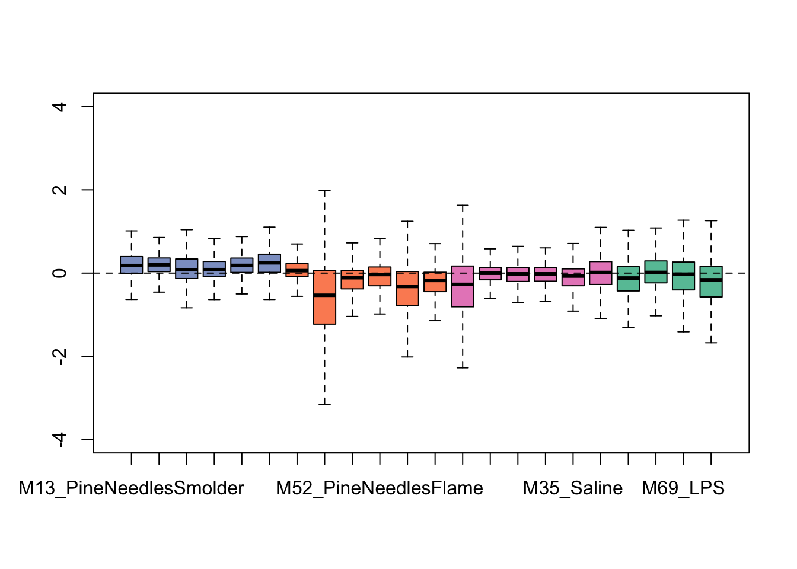
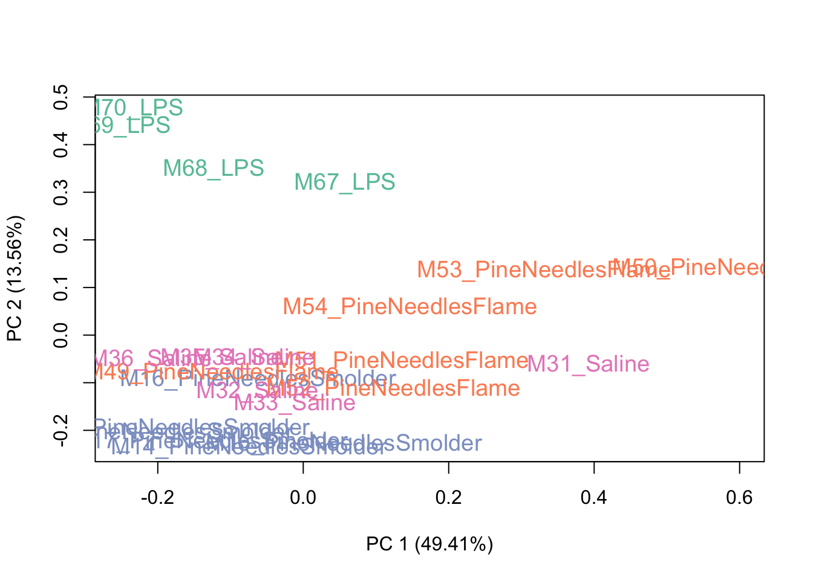
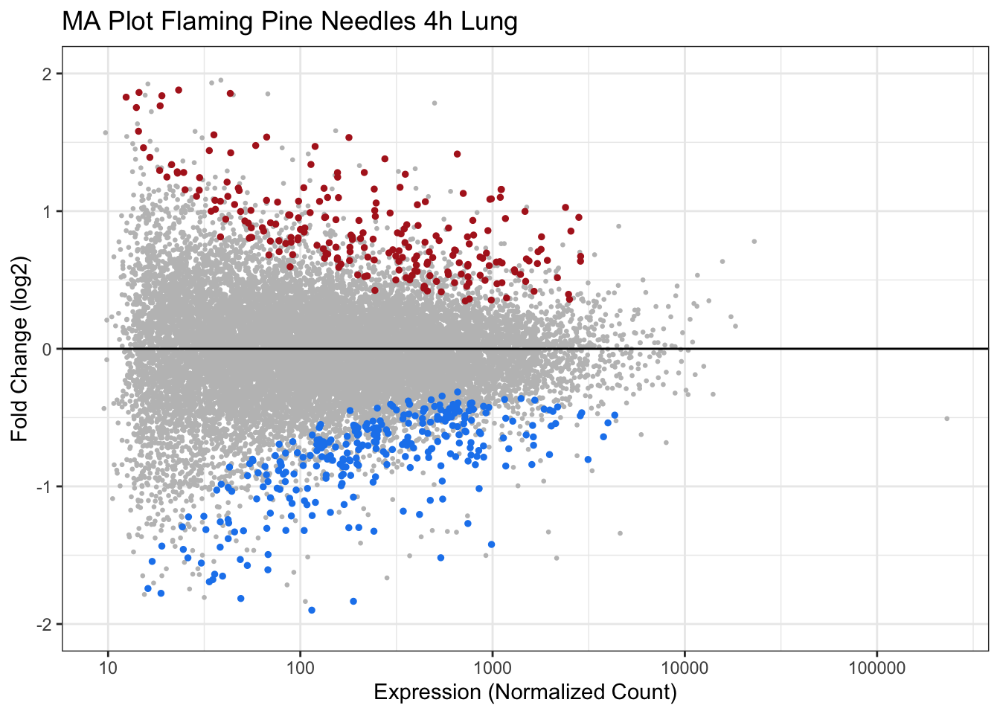
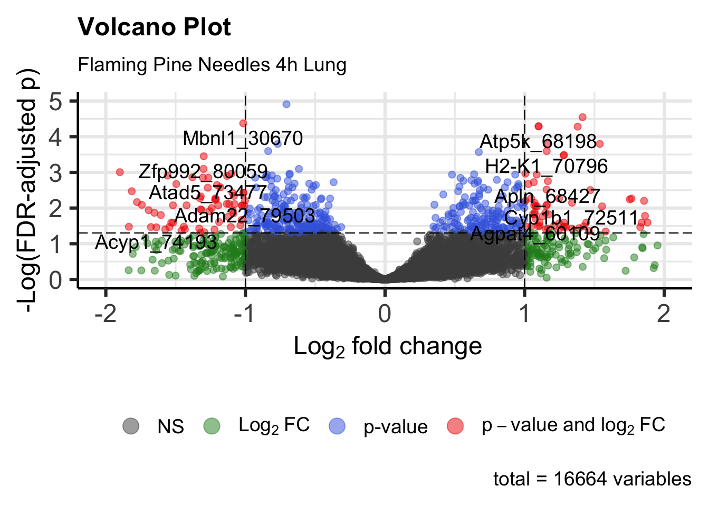

Controlling for Sources of Sample Heterogeneity
Because these transcriptomic data were generated from mouse lung tissues, there is potential for these samples to show heterogeneity based on underlying shifts in cell populations (e.g., neutrophil influx) or other aspects of sample heterogeneity (e.g., batch effects from plating, among other sources of heterogeneity that we may want to control for). For these kinds of complex samples, there are data processing methods that can be leveraged to minimize the influence of these sources of heterogeneity. Example methods include Remove Unwanted Variable (RUV), which is discussed here, as well as others (e.g., Surrogate Variable Analysis (SVA)).
Here, we leverage the package called RUVseq to employ RUV on this sequencing dataset. Script was developed based off Bioconductor website, vignette, and original publication.
Steps in carrying out RUV using RUVseq on this example dataset:
# First we store the treatment IDs and exposure conditions as a separate vector
ID <- coldata$ID
# And differentiate our treatments and control conditions, first by grabbing
# the groups associated with each sample
groups <- as.factor(coldata$Group)
# Let's view all the groups
groups## [1] PineNeedlesSmolder_4h_Lung PineNeedlesSmolder_4h_Lung
## [3] PineNeedlesSmolder_4h_Lung PineNeedlesSmolder_4h_Lung
## [5] PineNeedlesSmolder_4h_Lung PineNeedlesSmolder_4h_Lung
## [7] PineNeedlesFlame_4h_Lung PineNeedlesFlame_4h_Lung
## [9] PineNeedlesFlame_4h_Lung PineNeedlesFlame_4h_Lung
## [11] PineNeedlesFlame_4h_Lung PineNeedlesFlame_4h_Lung
## [13] Saline_4h_Lung Saline_4h_Lung
## [15] Saline_4h_Lung Saline_4h_Lung
## [17] Saline_4h_Lung Saline_4h_Lung
## [19] LPS_4h_Lung LPS_4h_Lung
## [21] LPS_4h_Lung LPS_4h_Lung
## 4 Levels: LPS_4h_Lung PineNeedlesFlame_4h_Lung ... Saline_4h_Lung# then setting a control label
ctrl <- "Saline_4h_Lung"
# and extracting a vector of just our treatment groups
trt_groups <- setdiff(groups,ctrl)
# let's view this vector
trt_groups## [1] "PineNeedlesSmolder_4h_Lung" "PineNeedlesFlame_4h_Lung"
## [3] "LPS_4h_Lung"RUVseq contains its own set of plotting and normalization functions, though requires input of what’s called an object of S4 class SeqExpressionSet. Let’s go ahead and make this object, using the RUVseq function ‘newSeqExpressionSet’:
exprSet <- newSeqExpressionSet(as.matrix(countdata),phenoData =
data.frame(groups,row.names=colnames(countdata)))And then use this object to generate some exploratory plots using built-in tools within RUVseq. First starting with some bar charts summarizing overall data distributions per sample:

We can see from this plot that some of the samples show distributions that may vary from the overall - for instance, one of the flaming pine needles-exposed samples (in orange) is far lower than the rest.
Then viewing a PCA plot of these samples:

This PCA plot shows pretty good data distributions, with samples mainly showing groupings based upon exposure condition (e.g., LPS), which is to be expected. With this, we can conclude that there may be some sources of unwanted variation, but not a huge amount. Let’s see what the data look like after running RUV.
Now to actually run the RUVseq algorithm, to control for potential sources of sample heterogeneity, we need to first construct a matrix specifying the replicates (samples of the same exposure condition):
# Construct a matrix specifying the replicates (samples of the same exposure condition)
# for running RUV
differences <- makeGroups(groups)
# Viewing this new matrix
head(differences)## [,1] [,2] [,3] [,4] [,5] [,6]
## [1,] 19 20 21 22 -1 -1
## [2,] 7 8 9 10 11 12
## [3,] 1 2 3 4 5 6
## [4,] 13 14 15 16 17 18This matrix groups the samples by exposure condition. Here, each of the four rows represents one of the four exposure conditions, and each of the six columns represents a possible sample. Since the LPS exposure condition only had four samples, instead of six like the rest of the exposure conditions, a value of -1 is automatically used as a place holder to fill out the matrix. The samples in the matrix are identified by the index of the sample in the previously defined ‘groups’ factor that was used to generate the matrix. For example, the PineNeedlesSmolder_4h_Lung samples are the the first six samples contained in the ‘groups’ factor, so in the matrix, samples of this exposure condition are identified as ‘1’,‘2’,‘3’,‘4’,‘5’, and ‘6’.
Let’s now implement the RUVseq algorithm and, for this example, capture one factor (k=1) of unwanted variation. Note that the k parameter can be modified to capture additional factors, if necessary.
# Now capture 1 factor (k=1) of unwanted variation
ruv_set <- RUVs(exprSet, rownames(countdata), k=1, differences) This results in a list of objects within ‘ruv_set’, which include the following important pieces of information:
- Estimated factors of unwanted variation are provided in the phenoData object, as viewed using the following:
## groups W_1
## M13_PineNeedlesSmolder PineNeedlesSmolder_4h_Lung 1.3777900
## M14_PineNeedlesSmolder PineNeedlesSmolder_4h_Lung 1.2392662
## M15_PineNeedlesSmolder PineNeedlesSmolder_4h_Lung 1.0687702
## M16_PineNeedlesSmolder PineNeedlesSmolder_4h_Lung 1.2448747
## M17_PineNeedlesSmolder PineNeedlesSmolder_4h_Lung 1.3156003
## M18_PineNeedlesSmolder PineNeedlesSmolder_4h_Lung 1.4136600
## M49_PineNeedlesFlame PineNeedlesFlame_4h_Lung 1.3343115
## M50_PineNeedlesFlame PineNeedlesFlame_4h_Lung 0.4446084
## M51_PineNeedlesFlame PineNeedlesFlame_4h_Lung 1.0172990
## M52_PineNeedlesFlame PineNeedlesFlame_4h_Lung 1.0332373
## M53_PineNeedlesFlame PineNeedlesFlame_4h_Lung 0.7746752
## M54_PineNeedlesFlame PineNeedlesFlame_4h_Lung 1.0011086
## M31_Saline Saline_4h_Lung 0.6582117
## M32_Saline Saline_4h_Lung 1.2518829
## M33_Saline Saline_4h_Lung 1.1892456
## M34_Saline Saline_4h_Lung 1.2607852
## M35_Saline Saline_4h_Lung 1.3141520
## M36_Saline Saline_4h_Lung 1.4335200
## M67_LPS LPS_4h_Lung 1.0341947
## M68_LPS LPS_4h_Lung 1.2823240
## M69_LPS LPS_4h_Lung 1.4460347
## M70_LPS LPS_4h_Lung 1.4376930- Normalized counts obtained by regressing the original counts on the unwanted factors (normalizedCounts object within ‘ruv_set’). Note that the normalized counts should only used for exploratory purposes and not subsequent differential expression analyses. For additional information on this topic, please refer official RUVSeq documentation. The normalized counts can be viewed using the following:
# Viewing the head of the normalized count data, accounting for unwanted variation
head(normCounts(ruv_set))## M13_PineNeedlesSmolder M14_PineNeedlesSmolder
## 0610009B22Rik_56046 4 5
## 0610010F05Rik_69119 2552 2630
## 0610010F05Rik_74637 17 13
## 0610010K14Rik_31619 1602 1774
## 0610010K14Rik_31873 711 1009
## 0610010K14Rik_68949 23 25
## M15_PineNeedlesSmolder M16_PineNeedlesSmolder
## 0610009B22Rik_56046 8 8
## 0610010F05Rik_69119 2474 1634
## 0610010F05Rik_74637 17 3
## 0610010K14Rik_31619 1639 1722
## 0610010K14Rik_31873 819 992
## 0610010K14Rik_68949 19 28
## M17_PineNeedlesSmolder M18_PineNeedlesSmolder
## 0610009B22Rik_56046 6 4
## 0610010F05Rik_69119 2343 2352
## 0610010F05Rik_74637 12 7
## 0610010K14Rik_31619 1979 1726
## 0610010K14Rik_31873 889 888
## 0610010K14Rik_68949 20 30
## M49_PineNeedlesFlame M50_PineNeedlesFlame
## 0610009B22Rik_56046 4 5
## 0610010F05Rik_69119 1767 1563
## 0610010F05Rik_74637 12 6
## 0610010K14Rik_31619 1480 1134
## 0610010K14Rik_31873 586 599
## 0610010K14Rik_68949 23 27
## M51_PineNeedlesFlame M52_PineNeedlesFlame
## 0610009B22Rik_56046 4 4
## 0610010F05Rik_69119 1918 1711
## 0610010F05Rik_74637 4 9
## 0610010K14Rik_31619 1390 1763
## 0610010K14Rik_31873 683 797
## 0610010K14Rik_68949 26 27
## M53_PineNeedlesFlame M54_PineNeedlesFlame M31_Saline
## 0610009B22Rik_56046 5 5 3
## 0610010F05Rik_69119 1751 1582 1891
## 0610010F05Rik_74637 6 3 10
## 0610010K14Rik_31619 1370 1419 1340
## 0610010K14Rik_31873 593 647 561
## 0610010K14Rik_68949 20 24 19
## M32_Saline M33_Saline M34_Saline M35_Saline M36_Saline
## 0610009B22Rik_56046 2 4 3 4 4
## 0610010F05Rik_69119 2507 2518 2524 1831 1878
## 0610010F05Rik_74637 7 7 5 7 8
## 0610010K14Rik_31619 1563 1632 1438 1280 967
## 0610010K14Rik_31873 685 815 703 646 526
## 0610010K14Rik_68949 16 21 19 22 20
## M67_LPS M68_LPS M69_LPS M70_LPS
## 0610009B22Rik_56046 3 2 4 5
## 0610010F05Rik_69119 1906 1597 1461 1201
## 0610010F05Rik_74637 6 6 7 5
## 0610010K14Rik_31619 964 1012 776 638
## 0610010K14Rik_31873 622 702 522 496
## 0610010K14Rik_68949 21 21 18 15Let’s again generate an exploratory plot using this updated dataset, focusing on the bar chart view since that was the most informative pre-RUV. Here are the updated bar charts summarizing overall data distributions per sample:

This plot shows overall tighter data that are more similarly distributed across samples. Therefore, it is looking like this RUV addition improved the overall distribution of this dataset. It is important not to over-correct/over-smooth your datasets, so implement these types of pre-processing steps with caution. One strategy that we commonly employ to gage whether data smoothing is needed/applied correctly is to run the statistical models with and without correction of potential sources of heterogeneity, and critically evaluate similarities vs differences produced in the results.
With this, we can answer Environmental Health Question 4: What is an approach that analysts can use when evaluating transcriptomic data from tissues of mixed cellular composition to aid in controlling for sources of sample heterogeneity?
Answer: Remove unwanted variation (RUV), among other approaches, including surrogate variable analysis (SVA).
Significantly Differentially Expressed Genes
Identifying Genes that are Significantly Differentially Expressed by Environmental Exposure Conditions (e.g., Biomass Smoke Exposure)
At this point, we have completed several data pre-processing, QA/QC, and additional steps to prepare our example transcriptomics data for statistical analysis. And finally, we are ready to run the overall statistical model to identify genes that are altered in expression in association with different biomass burn conditions.
Here we leverage the DESeq2 package to carry out these statistical comparisons. This package is now the most commonly implemented analysis pipeline used for transcriptomic data, including sequencing data as well as transcriptomic data produced via other technologies (e.g., Nanostring, Fluidigm, and other gene expression technologies). This package is extremely well-documented and we encourage trainees to leverage these resources in parallel with the current training module when carrying out their own transcriptomics analyses in R:
- Bioconductor website
- Vignette
- Manual
- Primary citation: Love MI, Huber W, Anders S. Moderated estimation of fold change and dispersion for RNA-seq data with DESeq2. Genome Biol. 2014;15(12):550. doi: 10.1186/s13059-014-0550-8. PMID: 25516281
In brief, the basic calculations employed within the DESeq2 underlying algorithms include the following:
1. Estimate size factors. In the first step, size factors are estimated to help account for potential differences in the sequencing depth across samples. It is similar to a normalization parameter in the model.
2. Normalize count data. DESeq2 employs different normalization algorithms depending on the parameters selected / stage of analysis. The most commonly employed method is called the median of ratios, which takes into account sequencing depth and RNA composition, as described here. Specifically, these normalized values are calculated as counts divided by sample-specific size factors determined by median ratio of gene counts relative to geometric mean per gene. DESeq2 then transforms these data using variance stabilization within the final statistical model. Because of these two steps, we prefer to export both the median of ratios normalized data as well as the variance stabilization transformed data, to save in our records and use when generating plots of expression levels for specific genes we are interested in. These steps are detailed below.
3. Estimate dispersion. The dispersion estimate takes into account the relationship between the variance of an observed count and its mean value. It is similar to a variance parameter. In DESeq2, dispersion is estimated using a maximum likelihood and empirical bayes approach.
4. Fit negative binomial generalized linear model (GLM). Finally, a negative binomial model is fit for each gene using the design formula that will be described within the proceeding code. The Wald test is performed to test if log fold changes in expression (typically calculated as log(average exposed / average unexposed)) significantly differ from zero. Statistical p-values are reported from this test and also adjusted for multiple testing using the Benjamini and Hochberg procedure.
Note that these calculations, among others, are embedded within the DESeq2 functions, so we do not need to code for them ourselves. Instead, we just need to make sure that we set-up the DESeq2 functions correctly, such that these calculations are carried out appropriately in our final transcriptomics analyses.
Setting up the DESeq2 experiment
Here we provide example script that is used to identify which genes are significantly differentially expressed in association with the example biomass smoke exposures, smoldering pine needles and flaming pine needles, as well as a positive inflammation control, LPS.
First, we need to set-up the DESeq2 experiment:
# Set up our experiment using our RUV adjusted count and phenotype data.
# Our design indicates that our count data is dependent on the exposure condition
# (groups variable) and our factor of unwanted variation, and we have specified
# that there not be an intercept term through the use of '~0'
dds <- DESeqDataSetFromMatrix(countData = counts(ruv_set), # Grabbing count data from the 'ruv_set' object
colData = pData(ruv_set), # Grabbing the phenotype data and corresponding factor of unwanted variation from the 'ruv_set' object
design = ~0+groups+W_1) # Setting up the statistical formula (see below)For the forumula design, we use a ‘~0’ at the front to not include an intercept term, and then also account for the exposure condition (groups) and the previously calculated factors of unwanted variation (W_1) of the samples. Formula design is an important step and should be carefully considered for each individual analysis. Other resources, including official DESeq2 documentation, are avialble for consultation regarding formula design, as the specifics of formula design are beyond the scope of this training module.
Estimating size factors
# Estimate size factors from the dds object that was just created as the experiment above
dds <- estimateSizeFactors(dds)
sizeFactors(dds) # viewing the size factors## M13_PineNeedlesSmolder M14_PineNeedlesSmolder M15_PineNeedlesSmolder
## 1.2668895 1.3040762 1.1782071
## M16_PineNeedlesSmolder M17_PineNeedlesSmolder M18_PineNeedlesSmolder
## 1.1723749 1.2904950 1.3405500
## M49_PineNeedlesFlame M50_PineNeedlesFlame M51_PineNeedlesFlame
## 1.1313237 0.6313099 0.9328970
## M52_PineNeedlesFlame M53_PineNeedlesFlame M54_PineNeedlesFlame
## 1.0050414 0.7649632 0.8747854
## M31_Saline M32_Saline M33_Saline
## 0.8050127 1.0480725 1.0389623
## M34_Saline M35_Saline M36_Saline
## 1.0282261 0.9519266 1.0409103
## M67_LPS M68_LPS M69_LPS
## 0.9308588 1.1002076 0.9793051
## M70_LPS
## 0.8575718Calculating and exporting normalized counts
# Calculating normalized count data
normcounts <- as.data.frame(counts(dds, normalized=TRUE))
write.csv(normcounts, "Module2_4_Output_NormalizedCounts.csv")
# Transforming normalized counts through variance stabilization
vsd <- varianceStabilizingTransformation(dds, blind=FALSE)
vsd_matrix <- as.matrix(assay(vsd))
write.csv(vsd_matrix, "Module2_4_Output_VSDCounts.csv", row.names=TRUE)Running the final DESeq2 experiment
Here, we are finally ready to run the actual statistical comparisons (exposed vs control samples) to calculate fold changes and p-values that describe the degree to which each gene may or may not be altered at the expression level in association with treatment.
For this example, we would like to run three different comparisons:
(1) Smoldering Pine Needles vs. Control
(2) Flaming Pine Needles vs. Control
(3) LPS vs. Control
which we can easily code for using a loop function, as detailed below.
# Run experiment
dds_run <- DESeq(dds, betaPrior=FALSE)
# Loop through and extract and export results for all contrasts (treatments vs. control)
for (trt in trt_groups){ # Iterate for each of the treatments listed in 'trt_groups'
cat(trt) # Print which treatment group we are on in the loop
res <- results(dds_run, pAdjustMethod = "BH", contrast = c("groups",trt,ctrl)) # Extract the results of the DESeq2 analysis specifically for the comparison of the treatment group for the current iteration of the loop with the control group
summary(res) # Print out a high-level summary of the results
ordered <- as.data.frame(res[order(res$padj),]) # Make a dataframe of the results and order them by adjusted p-value from lowest to highest
top10 <- head(ordered, n=10) # Make dataframe of the first ten rows of the ordered results
cat("\nThe 10 most significantly differentially expressed genes by adjusted p-value:\n\n")
print(top10) # View the first ten rows of the ordered results
pfilt.05 <- nrow(ordered %>% filter(padj<0.05)) # Get the number of genes that are significantly differentially expressed where padj < 0.05
cat("\nThe number of genes showing significant differential expression where padj < 0.05 is ", pfilt.05)
pfilt.10 <- nrow(ordered %>% filter(padj<0.1)) # Get the number of genes that are significantly differentially expressed where padj < 0.10
cat("\nThe number of genes showing significant differential expression where padj < 0.10 is ", pfilt.10,"\n\n")
write.csv(ordered, paste0("Module2_4_Output_StatisticalResults_",trt ,".csv")) # Export the full dataframe of ordered results as a csv
}## PineNeedlesSmolder_4h_Lung
## out of 16664 with nonzero total read count
## adjusted p-value < 0.1
## LFC > 0 (up) : 457, 2.7%
## LFC < 0 (down) : 697, 4.2%
## outliers [1] : 0, 0%
## low counts [2] : 1293, 7.8%
## (mean count < 21)
## [1] see 'cooksCutoff' argument of ?results
## [2] see 'independentFiltering' argument of ?results
##
##
## The 10 most significantly differentially expressed genes by adjusted p-value:
##
## baseMean log2FoldChange lfcSE stat pvalue
## Hbs1l_72436 367.64772 -1.1465230 0.13614949 -8.421060 3.730933e-17
## Cetn3_30290 2350.31984 -0.7197604 0.09379276 -7.673944 1.667868e-14
## Grasp_56900 277.43936 0.9759274 0.14177298 6.883734 5.830390e-12
## Pcsk7_57804 180.24040 0.8261941 0.13529825 6.106465 1.018617e-09
## Plscr4_55764 178.95216 1.3193654 0.21751536 6.065620 1.314459e-09
## Socs3_79479 183.28293 1.2535533 0.20740514 6.043983 1.503550e-09
## Kat2b_64780 444.97603 -0.7197105 0.12034633 -5.980327 2.226896e-09
## Ptp4a2_62762 1840.75247 -0.7802857 0.13076704 -5.966990 2.416698e-09
## Rmi1_56327 377.57936 -0.8548903 0.14288443 -5.983089 2.189449e-09
## Abcd2_62271 57.46455 -1.2504459 0.21464501 -5.825646 5.689193e-09
## padj
## Hbs1l_72436 5.734817e-13
## Cetn3_30290 1.281840e-10
## Grasp_56900 2.987297e-08
## Pcsk7_57804 3.851843e-06
## Plscr4_55764 3.851843e-06
## Socs3_79479 3.851843e-06
## Kat2b_64780 4.127451e-06
## Ptp4a2_62762 4.127451e-06
## Rmi1_56327 4.127451e-06
## Abcd2_62271 8.744859e-06
##
## The number of genes showing significant differential expression where padj < 0.05 is 679
## The number of genes showing significant differential expression where padj < 0.10 is 1154
##
## PineNeedlesFlame_4h_Lung
## out of 16664 with nonzero total read count
## adjusted p-value < 0.1
## LFC > 0 (up) : 411, 2.5%
## LFC < 0 (down) : 575, 3.5%
## outliers [1] : 0, 0%
## low counts [2] : 0, 0%
## (mean count < 10)
## [1] see 'cooksCutoff' argument of ?results
## [2] see 'independentFiltering' argument of ?results
##
##
## The 10 most significantly differentially expressed genes by adjusted p-value:
##
## baseMean log2FoldChange lfcSE stat pvalue
## Tmem109_70229 351.49267 1.2681226 0.1637785 7.742913 9.716419e-15
## Rhof_64396 58.57258 1.4767798 0.2210640 6.680328 2.384081e-11
## Plscr4_55764 178.95216 1.5349460 0.2393976 6.411701 1.439049e-10
## Pip4k2a_67992 796.64597 0.8262520 0.1299839 6.356571 2.063073e-10
## Zranb2_68671 739.91379 0.8131628 0.1330277 6.112735 9.793822e-10
## Cul1_31957 896.52286 -0.7061150 0.1203618 -5.866602 4.448172e-09
## Ppfibp1_75630 655.07197 1.4148222 0.2481843 5.700692 1.193223e-08
## Mbnl1_30670 851.18586 -1.0159639 0.1811247 -5.609197 2.032670e-08
## Atp5k_68198 1096.49479 1.1003470 0.1983469 5.547588 2.896380e-08
## Gclm_29258 138.54250 1.0993904 0.1985396 5.537387 3.070173e-08
## padj
## Tmem109_70229 1.619144e-10
## Rhof_64396 1.986416e-07
## Plscr4_55764 7.993439e-07
## Pip4k2a_67992 8.594761e-07
## Zranb2_68671 3.264085e-06
## Cul1_31957 1.235406e-05
## Ppfibp1_75630 2.840553e-05
## Mbnl1_30670 4.234052e-05
## Atp5k_68198 5.116136e-05
## Gclm_29258 5.116136e-05
##
## The number of genes showing significant differential expression where padj < 0.05 is 515
## The number of genes showing significant differential expression where padj < 0.10 is 986
##
## LPS_4h_Lung
## out of 16664 with nonzero total read count
## adjusted p-value < 0.1
## LFC > 0 (up) : 2960, 18%
## LFC < 0 (down) : 2947, 18%
## outliers [1] : 0, 0%
## low counts [2] : 0, 0%
## (mean count < 10)
## [1] see 'cooksCutoff' argument of ?results
## [2] see 'independentFiltering' argument of ?results
##
##
## The 10 most significantly differentially expressed genes by adjusted p-value:
##
## baseMean log2FoldChange lfcSE stat pvalue
## Usp18_32270 1319.2259 3.829526 0.1459140 26.24508 8.133515e-152
## Usp18_67659 414.5959 3.739864 0.1679851 22.26307 8.428171e-110
## Ifit1_29859 862.3286 5.000365 0.2259553 22.12989 1.629877e-108
## Oasl2_67419 1437.6182 3.710164 0.1904583 19.48019 1.616902e-84
## Gbp5_77887 600.7219 5.272287 0.2769982 19.03365 8.977555e-81
## Oasl2_67043 292.4482 3.898484 0.2096435 18.59578 3.476310e-77
## Rnf213_57840 1052.0454 3.168052 0.1731212 18.29962 8.332621e-75
## Cmpk2_70664 429.4232 4.592488 0.2518916 18.23200 2.875888e-74
## Cmpk2_29189 695.1997 4.264136 0.2386279 17.86939 2.042134e-71
## Eif2ak2_30238 1585.6071 2.671974 0.1495526 17.86645 2.152596e-71
## padj
## Usp18_32270 1.355369e-147
## Usp18_67659 7.022352e-106
## Ifit1_29859 9.053424e-105
## Oasl2_67419 6.736013e-81
## Gbp5_77887 2.992039e-77
## Oasl2_67043 9.654872e-74
## Rnf213_57840 1.983640e-71
## Cmpk2_70664 5.990475e-71
## Cmpk2_29189 3.587085e-68
## Eif2ak2_30238 3.587085e-68
##
## The number of genes showing significant differential expression where padj < 0.05 is 4813
## The number of genes showing significant differential expression where padj < 0.10 is 5907With this, we can answer Environmental Health Question 5: How many genes showed significant differential expression associated with flaming pine needles exposure in the mouse lung, based on a statistical filter of a multiple test corrected p-value (padj) < 0.05?
Answer: 515 genes.
With this, we can answer Environmental Health Question 6: How many genes showed significant differential expression associated with smoldering pine needles exposure in the mouse lung, based on a statistical filter of a multiple test corrected p-value (padj) < 0.05?
Answer: 679 genes.
With this, we can answer Environmental Health Question 7: How many genes showed significant differential expression associated with lipopolysaccharide (LPS) exposure in the mouse lung, based on a statistical filter of a multiple test corrected p-value (padj) < 0.05?
Answer: 4813 genes.
Together, we find that exposure to both flaming and smoldering of pine needles caused substantial disruptions in gene expression profiles. LPS serves as a positive control for inflammation and produced the greatest transcriptomic response.
Visualizing Statistical Results
MA Plots
MA plots represent a common method of visualization that illustrates differences between measurements taken in two samples, by transforming the data onto M (log ratio) and A (mean average) scales, then plotting these values.
Here, we leverage MA plots to show how log fold changes relate to expression levels. In these plots, the log fold change is plotted on the y-axis and expression values are plotted along the x-axis, and dots are colored according to statistical significance (using padj<0.05 as the statistical filter). Here we will generate an MA plot for Flaming Pine Needles.
res <- results(dds_run, pAdjustMethod = "BH", contrast =
c("groups","PineNeedlesFlame_4h_Lung",ctrl)) # Re-extract the DESeq2 results for the flamming pine needles
MA <- data.frame(res) # Make a prelimiary dataframe of the flaming pine needle results
MA_ns <- MA[ which(MA$padj>=0.05),] # Non-significant genes to plot
MA_up <- MA[ which(MA$padj<0.05 & MA$log2FoldChange > 0),] # Significant up-regulated genes to plot
MA_down <- MA[ which(MA$padj<0.05 & MA$log2FoldChange < 0),] #Significant down-regulated genes to plot
ggplot(MA_ns, aes(x = baseMean, y = log2FoldChange)) + # Plot data with counts on x-axis and log2 fold change on y-axis
geom_point(color="gray75", size = .5) + # Set point size and color
geom_point(data = MA_up, color="firebrick", size=1, show.legend = TRUE) + # Plot the up-regulated significant genes
geom_point(data = MA_down, color="dodgerblue2", size=1, show.legend = TRUE) + # Plot down-regulated significant genes
theme_bw() + # Change theme of plot from gray to black and white
# We want to log10 transform x-axis for better visualizations
scale_x_continuous(trans = "log10", breaks=c(1,10,100, 1000, 10000, 100000, 1000000),
labels=c("1","10","100", "1000", "10000", "100000", "1000000")) +
# We will bound y axis as well to better fit data while not leaving out too many points
scale_y_continuous(limits=c(-2, 2)) +
xlab("Expression (Normalized Count)") + ylab("Fold Change (log2)") + # Add labels for axes
labs(title="MA Plot Flaming Pine Needles 4h Lung") + # Add title
geom_hline(yintercept=0) # Add horizontal line at 0
Volcano Plots
Similar to MA plots, volcano plots provide visualizations of fold changes in expression from transcriptomic data. However, instead of plotting these values against expression, log fold change is plotted against (adjusted) p-values in volcano plots. Here, we use functions within the EnhancedVolcano package to generate a volcano plot for Flaming Pine Needles.
Running the ‘EnhancedVolcano’ function to generate an example volcano plot:
Vol <- data.frame(res) # Dataset to use for plotting
EnhancedVolcano(Vol,
lab = rownames(res), # Label information from dataset (can be a column name)
x = 'log2FoldChange', # Column name in dataset with l2fc information
y = 'padj', # Column name in dataset with adjusted p-value information
ylab = "-Log(FDR-adjusted p)", # Y-axis label
pCutoff= 0.05, # Set p-value cutoff
ylim=c(0,5), # Limit y-axis for better plot visuals
xlim=c(-2,2), # Limit x-axis (similar to in MA plot y-axis)
title="Volcano Plot", # Set title
subtitle = "Flaming Pine Needles 4h Lung", # Set subtitle
legendPosition = 'bottom') # Put legend on bottom
Pathway Enrichment Analysis
Interpretting Findings at the Systems Level through Pathway Enrichment Analysis
Pathway enrichment analysis is a very helpful tool that can be applied to interpret transcriptomic changes of interest in terms of systems biology. In these types of analyses, gene lists of interest are used to identify biological pathways that include genes present in your dataset more often than expected by chance alone. There are many tools that can be used to carry out pathway enrichment analyses. Here, we are using the R package, PIANO, to carry out the statistical enrichment analysis based on the lists of genes we previously identified with differential expression associated with flaming pine needles exposure.
To detail, the following input data are required to run PIANO:
(1) Your background gene sets, which represent all genes queried from your experiment (aka your ‘gene universe’)
(2) The list of genes you are interested in evaluating pathway enrichment of; here, this represents the genes identified with significant differential expression associated with flaming pine needles
(3) A underlying pathway dataset; here, we’re using the KEGG PATHWAY Database (KEGG), summarized through the Molecular Signature Database (MSigDB) into pre-formatted input files (.gmt) ready for PIANO.
Let’s organize these three required data inputs.
- Background gene set:
# First grab the rownames of the 'res' object, which was redefined as the DESeq2
# results for flaming pine needles prior to MA plot generation, and remove the
# BioSpyder numeric identifier using a sub function, while maintaining the gene
# symbol and place these IDs into a new list within the 'res' object (saved as 'id')
res$id <- gsub("_.*", "", rownames(res));
# Because these IDs now contain duplicate gene symbols, we need to remove duplicates
# One way to do this is to preferentially retain rows of data with the largest
# fold change (it doesn't really matter here, because we're just identifying
# unique genes within the background set)
res.ordered <- res[order(res$id, -abs(res$log2FoldChange) ), ] # sort by id and reverse of abs(log2foldchange)
res.ordered <- res.ordered[ !duplicated(res.ordered$id), ] # removing gene duplicates
# Setting this as the background list
Background <- toupper(as.character(res.ordered$id))
Background[1:200] # viewing the first 200 genes in this background list## [1] "0610009B22RIK" "0610010F05RIK" "0610010K14RIK" "0610012G03RIK"
## [5] "0610030E20RIK" "0610040J01RIK" "1110004F10RIK" "1110008P14RIK"
## [9] "1110012L19RIK" "1110017D15RIK" "1110032A03RIK" "1110038F14RIK"
## [13] "1110059E24RIK" "1110059G10RIK" "1110065P20RIK" "1190002N15RIK"
## [17] "1190007I07RIK" "1500011B03RIK" "1500011K16RIK" "1600002K03RIK"
## [21] "1600012H06RIK" "1600014C10RIK" "1700001L19RIK" "1700003E16RIK"
## [25] "1700007K13RIK" "1700012B09RIK" "1700013F07RIK" "1700016K19RIK"
## [29] "1700017B05RIK" "1700020D05RIK" "1700024G13RIK" "1700025G04RIK"
## [33] "1700028P14RIK" "1700029I15RIK" "1700029J07RIK" "1700030K09RIK"
## [37] "1700037C18RIK" "1700037H04RIK" "1700086D15RIK" "1700088E04RIK"
## [41] "1700102P08RIK" "1700109H08RIK" "1700123O20RIK" "1810009A15RIK"
## [45] "1810010H24RIK" "1810013L24RIK" "1810022K09RIK" "1810030O07RIK"
## [49] "1810037I17RIK" "1810043G02RIK" "1810055G02RIK" "2010005H15RIK"
## [53] "2010111I01RIK" "2010300C02RIK" "2010309G21RIK" "2200002D01RIK"
## [57] "2210011C24RIK" "2210016H18RIK" "2210016L21RIK" "2210408I21RIK"
## [61] "2300009A05RIK" "2310007B03RIK" "2310009B15RIK" "2310011J03RIK"
## [65] "2310022A10RIK" "2310022B05RIK" "2310030G06RIK" "2310033P09RIK"
## [69] "2310057M21RIK" "2310061I04RIK" "2410002F23RIK" "2410004B18RIK"
## [73] "2410015M20RIK" "2410131K14RIK" "2510002D24RIK" "2510009E07RIK"
## [77] "2600001M11RIK" "2610001J05RIK" "2610002M06RIK" "2610008E11RIK"
## [81] "2610028H24RIK" "2610301B20RIK" "2610507B11RIK" "2700049A03RIK"
## [85] "2700062C07RIK" "2700081O15RIK" "2700097O09RIK" "2810004N23RIK"
## [89] "2810021J22RIK" "2810408A11RIK" "2900026A02RIK" "3110001I22RIK"
## [93] "3110040N11RIK" "3110082I17RIK" "3830406C13RIK" "4430402I18RIK"
## [97] "4732423E21RIK" "4833414E09RIK" "4833420G17RIK" "4833427G06RIK"
## [101] "4833439L19RIK" "4921524J17RIK" "4930402H24RIK" "4930430F08RIK"
## [105] "4930451G09RIK" "4930453N24RIK" "4930486L24RIK" "4930503L19RIK"
## [109] "4930523C07RIK" "4930550C14RIK" "4930562C15RIK" "4931406C07RIK"
## [113] "4931406P16RIK" "4931414P19RIK" "4932438A13RIK" "4933408B17RIK"
## [117] "4933415F23RIK" "4933427D14RIK" "4933434E20RIK" "5330417C22RIK"
## [121] "5430427O19RIK" "5730480H06RIK" "5830417I10RIK" "6030458C11RIK"
## [125] "6030468B19RIK" "6330403K07RIK" "6330417A16RIK" "6430531B16RIK"
## [129] "6430548M08RIK" "6430550D23RIK" "6720489N17RIK" "8030462N17RIK"
## [133] "9030624G23RIK" "9130008F23RIK" "9130019O22RIK" "9130023H24RIK"
## [137] "9130230L23RIK" "9230104L09RIK" "9330182L06RIK" "9530068E07RIK"
## [141] "9930012K11RIK" "9930021J03RIK" "9930111J21RIK1" "9930111J21RIK2"
## [145] "A130071D04RIK" "A230050P20RIK" "A2ML1" "A430005L14RIK"
## [149] "A430033K04RIK" "A430078G23RIK" "A530032D15RIK" "A630001G21RIK"
## [153] "A730034C02" "A730049H05RIK" "A830018L16RIK" "A930002H24RIK"
## [157] "A930004D18RIK" "AA415038" "AA986860" "AACS"
## [161] "AAED1" "AAGAB" "AAK1" "AAMDC"
## [165] "AAMP" "AAR2" "AARS" "AARS2"
## [169] "AARSD1" "AASDH" "AASS" "AATF"
## [173] "AATK" "AB124611" "ABCA1" "ABCA17"
## [177] "ABCA2" "ABCA3" "ABCA5" "ABCA7"
## [181] "ABCA8A" "ABCA8B" "ABCA9" "ABCB10"
## [185] "ABCB1A" "ABCB1B" "ABCB6" "ABCB7"
## [189] "ABCB8" "ABCC1" "ABCC3" "ABCC4"
## [193] "ABCC5" "ABCD1" "ABCD2" "ABCD3"
## [197] "ABCD4" "ABCE1" "ABCF1" "ABCF3"- The list of genes identified with significant differential expression associated with flaming pine needles:
# Similar to the above script, but starting with the res$id object
# and filtering for genes with padj < 0.05
# Pulling the genes with padj < 0.05
res.ordered <- res[order(res$id, -abs(res$log2FoldChange) ), ]
# Pulling the genes with padj < 0.05
SigGenes <- toupper(as.character(res.ordered[which(res.ordered$padj<.05),"id"]))
# Removing gene duplicates
SigGenes <- SigGenes[ !duplicated(SigGenes)]
# Viewing the length of this significant gene list
length(SigGenes) ## [1] 488Therefore, this gene set includes 488 unique genes significantly associated with the Flaming Pine Needles condition, based on padj<0.05.
- The underlying KEGG pathway dataset. Note that this file was simply downloaded from MSigDB, ready for upload as a .gmt file. Here, we use the ‘loadGSC’ function enabled through the PIANO package to upload and organize these pathways.
KEGG_Pathways <- loadGSC(file="Module2_4/Module2_4_kegg_v7_symbols.gmt", type="gmt")
# Viewing the number of biological pathways contained in the database
length(KEGG_Pathways$gsc) ## [1] 186This KEGG pathway database therefore includes 186 biological pathways available to query
With these data inputs ready, we can now run the pathway enrichment analysis. The enrichment statistic that is commonly employed through the PIANO package is based of a hypergeometric test, run through the ‘runGSAhyper’ function. This returns a p-value for each gene set from which you can determine enrichment status.
# Running the piano function based on the hypergeometric statistic
Results_GSA <- piano::runGSAhyper(genes=SigGenes, universe=Background,
gsc=KEGG_Pathways, gsSizeLim=c(1,Inf), adjMethod = "fdr")
# Pulling the pathway enrichment results into a separate dataframe
PathwayResults <- as.data.frame(Results_GSA$resTab)
# Viewing the top of these pathway enrichment results (which are not ordered at the moment)
head(PathwayResults)## p-value Adjusted p-value
## KEGG_N_GLYCAN_BIOSYNTHESIS 0.77021314 1.0000000
## KEGG_OTHER_GLYCAN_DEGRADATION 1.00000000 1.0000000
## KEGG_O_GLYCAN_BIOSYNTHESIS 0.03553158 0.6656139
## KEGG_GLYCOSAMINOGLYCAN_DEGRADATION 0.42056787 1.0000000
## KEGG_GLYCOSAMINOGLYCAN_BIOSYNTHESIS_KERATAN_SULFATE 1.00000000 1.0000000
## KEGG_GLYCEROLIPID_METABOLISM 0.16241736 1.0000000
## Significant (in gene set)
## KEGG_N_GLYCAN_BIOSYNTHESIS 1
## KEGG_OTHER_GLYCAN_DEGRADATION 0
## KEGG_O_GLYCAN_BIOSYNTHESIS 3
## KEGG_GLYCOSAMINOGLYCAN_DEGRADATION 1
## KEGG_GLYCOSAMINOGLYCAN_BIOSYNTHESIS_KERATAN_SULFATE 0
## KEGG_GLYCEROLIPID_METABOLISM 3
## Non-significant (in gene set)
## KEGG_N_GLYCAN_BIOSYNTHESIS 34
## KEGG_OTHER_GLYCAN_DEGRADATION 13
## KEGG_O_GLYCAN_BIOSYNTHESIS 15
## KEGG_GLYCOSAMINOGLYCAN_DEGRADATION 12
## KEGG_GLYCOSAMINOGLYCAN_BIOSYNTHESIS_KERATAN_SULFATE 12
## KEGG_GLYCEROLIPID_METABOLISM 31
## Significant (not in gene set)
## KEGG_N_GLYCAN_BIOSYNTHESIS 487
## KEGG_OTHER_GLYCAN_DEGRADATION 488
## KEGG_O_GLYCAN_BIOSYNTHESIS 485
## KEGG_GLYCOSAMINOGLYCAN_DEGRADATION 487
## KEGG_GLYCOSAMINOGLYCAN_BIOSYNTHESIS_KERATAN_SULFATE 488
## KEGG_GLYCEROLIPID_METABOLISM 485
## Non-significant (not in gene set)
## KEGG_N_GLYCAN_BIOSYNTHESIS 11355
## KEGG_OTHER_GLYCAN_DEGRADATION 11376
## KEGG_O_GLYCAN_BIOSYNTHESIS 11374
## KEGG_GLYCOSAMINOGLYCAN_DEGRADATION 11377
## KEGG_GLYCOSAMINOGLYCAN_BIOSYNTHESIS_KERATAN_SULFATE 11377
## KEGG_GLYCEROLIPID_METABOLISM 11358This dataframe therefore summarizes the enrichment p-value for each pathway, FDR adjusted p-value, number of significant genes in the gene set that intersect with genes in the pathway, etc
With these results, let’s identify which pathways meet a statistical enrichment p-value filter of 0.05:
## [1] "KEGG_O_GLYCAN_BIOSYNTHESIS"
## [2] "KEGG_HYPERTROPHIC_CARDIOMYOPATHY_HCM"
## [3] "KEGG_ARRHYTHMOGENIC_RIGHT_VENTRICULAR_CARDIOMYOPATHY_ARVC"
## [4] "KEGG_PROTEASOME"
## [5] "KEGG_OOCYTE_MEIOSIS"
## [6] "KEGG_VASCULAR_SMOOTH_MUSCLE_CONTRACTION"
## [7] "KEGG_WNT_SIGNALING_PATHWAY"
## [8] "KEGG_HEDGEHOG_SIGNALING_PATHWAY"
## [9] "KEGG_FOCAL_ADHESION"
## [10] "KEGG_ECM_RECEPTOR_INTERACTION"
## [11] "KEGG_COMPLEMENT_AND_COAGULATION_CASCADES"
## [12] "KEGG_GNRH_SIGNALING_PATHWAY"With this, we can answer Environmental Health Question 8: What biological pathways are disrupted in association with flaming pine needles exposure in the lung, identified through systems level analyses?
Answer: Biological pathways involved in cardiopulmonary function (e.g., arrhythmogenic right ventricular cardiomyopathy, hypertrophic cardiomyopathy, vascular smooth muscle contraction), carcinogenesis signaling (e.g., Wnt signaling pathway, hedgehog signaling pathway), and hormone signaling (e.g., Gnrh signaling pathway), among others.
Concluding Remarks
In this module, users are guided through the uploading, organization, QA/QC, statistical analysis, and systems level analysis of an example -omics dataset based on transcriptomic responses to biomass burn scenarios, representing environmental exposure scenarios of growing concern worldwide. It is worth noting that the methods described herein represent a fraction of the approaches and tools that can be leveraged in the analysis of -omics datasets, and methods should be tailored to the purposes of each individual analysis’ goal. For additional example research projects that have leveraged -omics and systems biology to address environmental health questions, see the following select relevant publications:
Genomic publications evaluating gene-environment interactions and relations to disease etiology:
Balik-Meisner M, Truong L, Scholl EH, La Du JK, Tanguay RL, Reif DM. Elucidating Gene-by-Environment Interactions Associated with Differential Susceptibility to Chemical Exposure. Environ Health Perspect. 2018 Jun 28;126(6):067010. PMID: 29968567.
Ward-Caviness CK, Neas LM, Blach C, Haynes CS, LaRocque-Abramson K, Grass E, Dowdy ZE, Devlin RB, Diaz-Sanchez D, Cascio WE, Miranda ML, Gregory SG, Shah SH, Kraus WE, Hauser ER. A genome-wide trans-ethnic interaction study links the PIGR-FCAMR locus to coronary atherosclerosis via interactions between genetic variants and residential exposure to traffic. PLoS One. 2017 Mar 29;12(3):e0173880. PMID: 28355232.
Transcriptomic publications evaluating gene expression responses to environmental exposures and relations to disease etiology:
Chang Y, Rager JE, Tilton SC. Linking Coregulated Gene Modules with Polycyclic Aromatic Hydrocarbon-Related Cancer Risk in the 3D Human Bronchial Epithelium. Chem Res Toxicol. 2021 Jun 21;34(6):1445-1455. PMID: 34048650.
Chappell GA, Rager JE, Wolf J, Babic M, LeBlanc KJ, Ring CL, Harris MA, Thompson CM. Comparison of Gene Expression Responses in the Small Intestine of Mice Following Exposure to 3 Carcinogens Using the S1500+ Gene Set Informs a Potential Common Adverse Outcome Pathway. Toxicol Pathol. 2019 Oct;47(7):851-864. PMID: 31558096.
Manuck TA, Eaves LA, Rager JE, Fry RC. Mid-pregnancy maternal blood nitric oxide-related gene and miRNA expression are associated with preterm birth. Epigenomics. 2021 May;13(9):667-682. PMID: 33890487.
Epigenomic publications evaluating microRNA, CpG methylation, and/or histone methylation responses to environmental exposures and relations to disease etiology:
Chappell GA, Rager JE. Epigenetics in chemical-induced genotoxic carcinogenesis. Curr Opinion Toxicol. 2017 Oct; 6:10-17.
Rager JE, Bailey KA, Smeester L, Miller SK, Parker JS, Laine JE, Drobná Z, Currier J, Douillet C, Olshan AF, Rubio-Andrade M, Stýblo M, García-Vargas G, Fry RC. Prenatal arsenic exposure and the epigenome: altered microRNAs associated with innate and adaptive immune signaling in newborn cord blood. Environ Mol Mutagen. 2014 Apr;55(3):196-208. PMID: 24327377.
Rager JE, Bauer RN, Müller LL, Smeester L, Carson JL, Brighton LE, Fry RC, Jaspers I. DNA methylation in nasal epithelial cells from smokers: identification of ULBP3-related effects. Am J Physiol Lung Cell Mol Physiol. 2013 Sep 15;305(6):L432-8. PMID: 23831618.
Smeester L, Rager JE, Bailey KA, Guan X, Smith N, García-Vargas G, Del Razo LM, Drobná Z, Kelkar H, Stýblo M, Fry RC. Epigenetic changes in individuals with arsenicosis. Chem Res Toxicol. 2011 Feb 18;24(2):165-7. PMID: 21291286.
Metabolomic publications evaluating changes in the metabolome in response to environmental exposures and involved in disease etiology:
Lu K, Abo RP, Schlieper KA, Graffam ME, Levine S, Wishnok JS, Swenberg JA, Tannenbaum SR, Fox JG. Arsenic exposure perturbs the gut microbiome and its metabolic profile in mice: an integrated metagenomics and metabolomics analysis. Environ Health Perspect. 2014 Mar;122(3):284-91. PMID: 24413286; PMCID: PMC3948040.
Manuck TA, Lai Y, Ru H, Glover AV, Rager JE, Fry RC, Lu K. Metabolites from midtrimester plasma of pregnant patients at high risk for preterm birth. Am J Obstet Gynecol MFM. 2021 Jul;3(4):100393. PMID: 33991707.
Microbiome publications evaluating changes in microbiome profiles in relation to the environment and human disease:
Chi L, Bian X, Gao B, Ru H, Tu P, Lu K. Sex-Specific Effects of Arsenic Exposure on the Trajectory and Function of the Gut Microbiome. Chem Res Toxicol. 2016 Jun 20;29(6):949-51.PMID: 27268458.
Cho I, Blaser MJ. The human microbiome: at the interface of health and disease. Nat Rev Genet. 2012 Mar 13;13(4):260-70. PMID: 22411464.
Lu K, Abo RP, Schlieper KA, Graffam ME, Levine S, Wishnok JS, Swenberg JA, Tannenbaum SR, Fox JG. Arsenic exposure perturbs the gut microbiome and its metabolic profile in mice: an integrated metagenomics and metabolomics analysis. Environ Health Perspect. 2014 Mar;122(3):284-91. PMID: 24413286.
Exposome publications evaluating changes in chemical signatures in relation to the environment and human disease:
Rager JE, Strynar MJ, Liang S, McMahen RL, Richard AM, Grulke CM, Wambaugh JF, Isaacs KK, Judson R, Williams AJ, Sobus JR. Linking high resolution mass spectrometry data with exposure and toxicity forecasts to advance high-throughput environmental monitoring. Environ Int. 2016 Mar;88:269-280. PMID: 26812473.
Rappaport SM, Barupal DK, Wishart D, Vineis P, Scalbert A. The blood exposome and its role in discovering causes of disease. Environ Health Perspect. 2014 Aug;122(8):769-74. PMID: 24659601.
Viet SM, Falman JC, Merrill LS, Faustman EM, Savitz DA, Mervish N, Barr DB, Peterson LA, Wright R, Balshaw D, O’Brien B. Human Health Exposure Analysis Resource (HHEAR): A model for incorporating the exposome into health studies. Int J Hyg Environ Health. 2021 Jun;235:113768. PMID: 34034040.